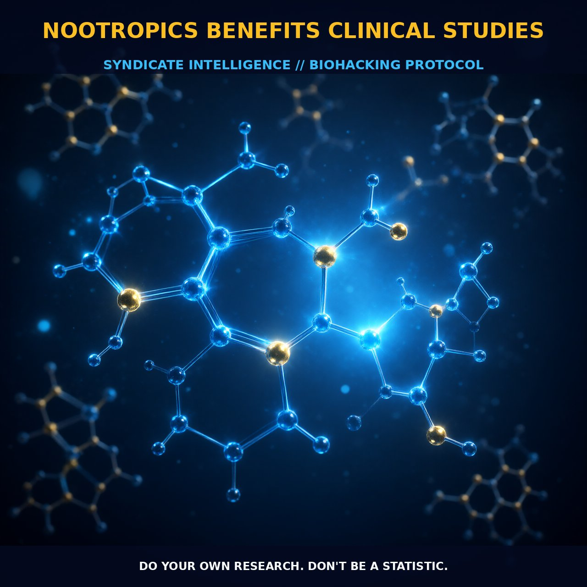

Enhancing Cognitive Function with Nootropics

1. The Mechanism
Nootropics are cognitive enhancing supplements that have gained significant attention for their potential to boost mental functions such as memory, focus, and mood. Derived from the Greek words "noos" (mind) and "trepein" (to bend or turn), nootropics work by modulating various neurotransmitter pathways and enhancing neural connectivity. These compounds target specific receptors and enzymes to improve neurotransmitter levels and optimize brain cell health.
For instance, nootropics like piracetam and its derivatives stimulate acetylcholine receptors, which are crucial for memory and learning. Additionally, they can influence glutamate receptors, enhancing synaptic plasticity and cognitive flexibility. By increasing the availability of these neurotransmitters, nootropics can enhance the efficiency of neural networks, thereby improving cognitive processes.
The primary mechanisms of nootropic action involve the modulation of neurotransmitter systems, such as acetylcholine, glutamate, and dopamine. Acetylcholine is particularly important for cognitive functions like memory and attention, while glutamate is a major excitatory neurotransmitter that plays a key role in synaptic plasticity and learning. Nootropics can also influence dopaminergic pathways, which are essential for motivation and reward processing. By targeting these pathways, nootropics can provide a synergistic effect on cognitive functions, enhancing both short-term performance and long-term brain health.
2. Biological Leverage
Nootropics exert their beneficial effects through various biological pathways that support neural health and cognitive function. They primarily act by enhancing neurotransmitter levels, increasing cerebral blood flow, and protecting brain cells from oxidative stress. For example, compounds like piracetam and its derivatives increase acetylcholine levels, which are crucial for memory and learning processes. By boosting acetylcholine, nootropics can improve synaptic plasticity and cognitive flexibility, leading to enhanced cognitive performance.
Moreover, nootropics can modulate glutamate receptors, which are involved in synaptic plasticity and learning, thereby enhancing cognitive functions. Additionally, nootropics can improve cerebral blood flow and oxygenation, which is critical for maintaining optimal brain function. By increasing blood flow to the brain, nootropics can enhance the delivery of oxygen and nutrients to neurons, supporting their metabolic needs and promoting overall brain health. This increased blood flow can also lead to better cognitive performance by enhancing neural connectivity and synaptic efficiency.
Furthermore, nootropics have antioxidant properties that protect brain cells from oxidative stress, reducing the risk of neurodegenerative diseases. By combining these various mechanisms, nootropics can provide a comprehensive approach to enhancing cognitive functions and promoting brain health.
3. Tactical Implementation
When implementing a nootropic regimen, it is crucial to consider the specific nootropics and their dosages. For example, piracetam is typically used in doses ranging from 400 mg to 2400 mg per day, with the dosage often adjusted based on individual tolerance and desired effects. It is generally recommended to start with lower doses and gradually increase to find the optimal level. For better absorption, it is advisable to take nootropics on an empty stomach or with a light meal.
Additionally, stacking nootropics can enhance their effectiveness. For instance, combining piracetam with choline sources like choline bitartrate or alpha-GPC can provide better acetylcholine support, enhancing the cognitive benefits. Timing is also an important factor in nootropic usage. Many nootropics have a half-life of several hours, making them suitable for daily use. It is often recommended to take nootropics in the morning or midday to avoid any potential interference with sleep.
Some users find that combining nootropics with other cognitive enhancers like caffeine or adaptogens can provide a synergistic effect. For instance, pairing nootropics with caffeine can enhance focus and mental clarity, while adaptogens like ashwagandha can help manage stress and improve cognitive resilience. Ultimately, the best nootropic regimen is tailored to individual needs and goals, and it may require some experimentation to find the most effective combination.
Prostar Life Hack
Start with lower doses of nootropics and gradually increase to find your optimal level. Combining nootropics with choline sources like alpha-GPC can enhance cognitive benefits.
[ AUTHOR: LEAD TECHNICAL RESEARCHER ]